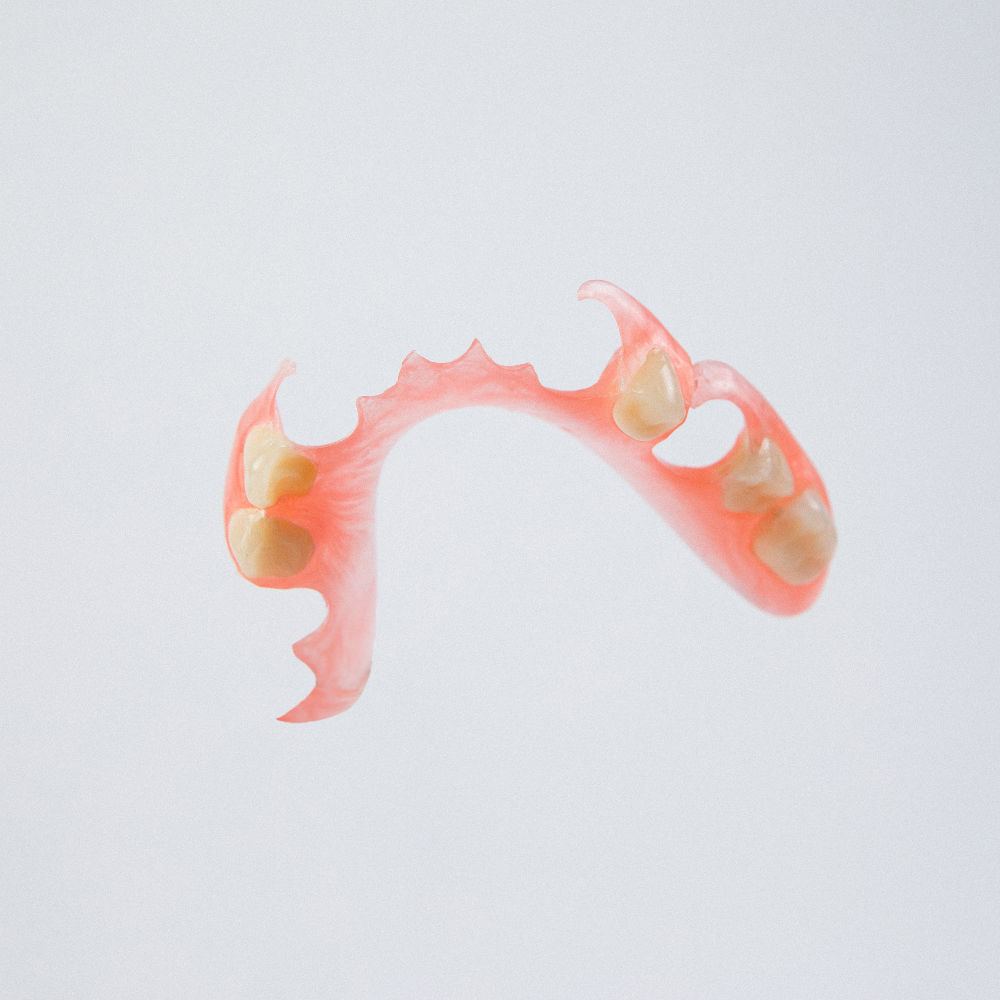

Protezy elastyczne – Poznań
- Strona główna
- Protezy elastyczne
Masz dość niewygodnej protezy? Poznaj komfortowe rozwiązanie bez metalowych klamer
Czy Twoja obecna proteza uwiera, jest ciężka lub krępują Cie widoczne metalowe elementy? Czy masz trudności z jedzeniem i czujesz się nieswojo podczas rozmow? Protezy elastyczne są odpowiedzią na te wszystkie problemy. To nowoczesne rozwiązanie, które jest lekkie, niewidoczne i idealnie dopasowane. Możesz znów jeść, śmiać się i żyć swobodnie.


Czym są protezy elastyczne (akronowe)?
Są to protezy wykonane z nowoczesnego, termoplastycznego materiału (Acron), który jest jednoczesnie elastyczny i bardzo wytrzymały. W przeciwieństwie do tradycyjnych protez akrylowych, nie posiadają one sztywnych, metalowych elementow mocujących.
Dzięki swojej elastyczności, protezy akronowe doskonale przylegają do dziąseł, zapewniając komfort noszenia i dyskrecję. Klamry są wykonane z tego samego materiału co baza protezy, dzięki czemu są praktycznie niewidoczne.

Kluczowe zalety protez z Acronu - komfort i pewność siebie na co dzien
Idealna Estetyka - uśmiech bez widocznego metalu
Elastyczne, różowe klamry idealnie wtapiają się w dziasla, stając się praktycznie niewidoczne. Przeziernosc materiału imituje naturalna tkanke. To rozwiązanie dla osob, dla których dyskrecja jest najważniejsza.
Niezrównany Komfort - lekkość i perfekcyjne dopasowanie
Protezy te są cieńsze i znacznie lżejsze od tradycyjnych, co ułatwia adaptację. Elastyczność materiału zapewnia idealne przyleganie bez uciskania. Pacjenci często zapominają, że mają protezę w ustach.
Zdrowie i Bezpieczeństwo - materiał w pelni biokompatybilny
Acron nie zawiera substancji uczulających (monomerów), nie powoduje reakcji alergicznych i nie podrażnia błony śluzowej jamy ustnej. Idealny wybór dla alergików i osob z wrażliwymi dziąsłami.
Wyjątkowa Trwałość - odporność na pęknięcia i uszkodzenia
"Elastyczne" nie znaczy "słabe". Wrec przeciwnie - elastyczność materiału sprawia, że jest on bardzo odporny na złamania.
Dla kogo proteza elastyczna to najlepszy wybór?
- Dla osob, które cenią sobie najwyższy komfort i dyskrecję
- Dla pacjentów z alergią na metal i inne składniki tradycyjnych protez
- Dla osob, u których warunki w jamie ustnej utrudniają wykonanie klasycznej protezy
- Jako doskonala alternatywa dla protez szkieletowych
- Dla osob aktywnych, które chcą normalnie jeść i rozmawiać

Jak powstaje Twoja nowa, idealnie dopasowana proteza? (Proces krok po kroku)
Bezpłatna konsultacja i planowanie
Rozmowa, ocena stanu jamy ustnej i przedstawienie możliwości. Bez zobowiązań.
Pobranie precyzyjnych wycisków
W naszej pracowni, bezboleśnie. Wyciski to podstawa idealnego dopasowania.
Przymiarki i dopasowanie
Precyzyjne dopasowanie protezy do jamy ustnej pacjenta, korekty i poprawki aż do idealnego rezultatu.
Odbiór
Pacjent otrzymuje nową protezę i wskazówki dotyczące jej pielęgnacji.
Gwarancja jakości - Certyfikat ROKO dla każdej protezy acronowej
Każda wykonana u nas proteza z Acronu posiada oryginalny certyfikat jakości ROKO z hologramem. To daje pacjentówi pewność, że otrzymuje produkt najwyższej klasy, wykonany z bezpiecznego i sprawdzonego materiału.
Chcesz dowiedzieć się, czy proteza elastyczna jest dla Ciebie?
Porozmawiajmy bez zobowiązań. Podczas bezpłatnej konsultacji odpowiem na wszystkie Twoje pytania i sprawdzimy, czy to najlepsze rozwiązanie w Twoim przypadku.
Umów bezpłatną konsultację w Poznaniu